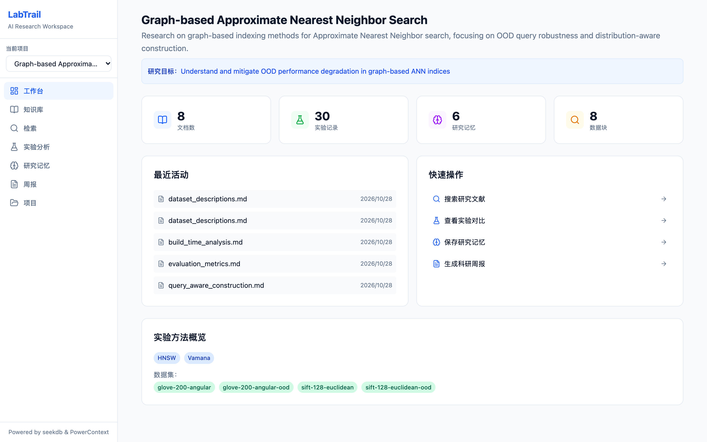
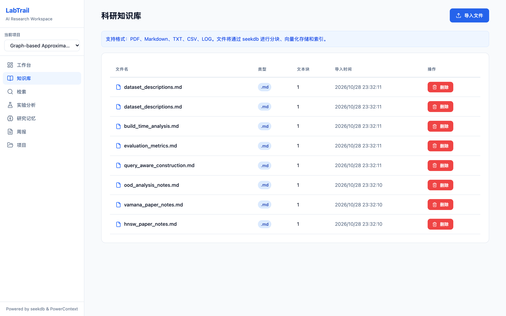
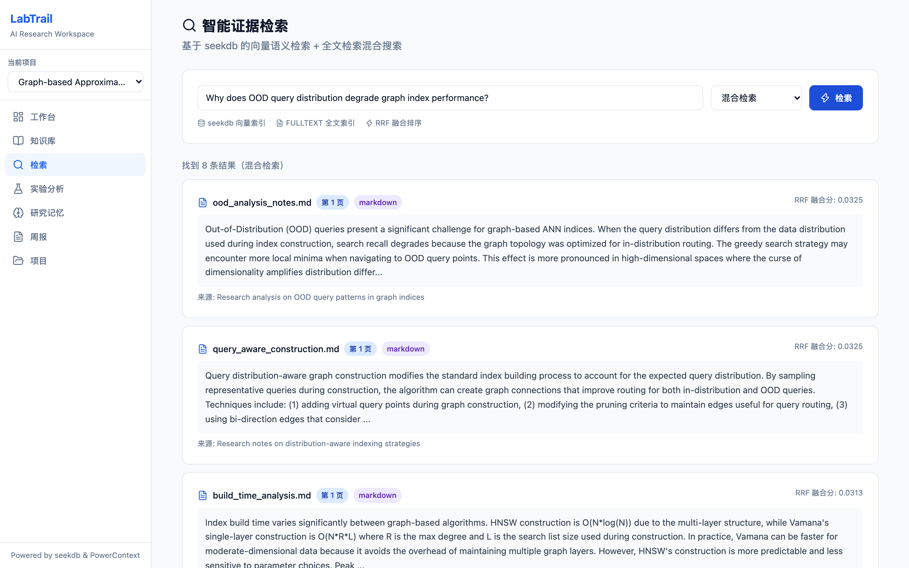
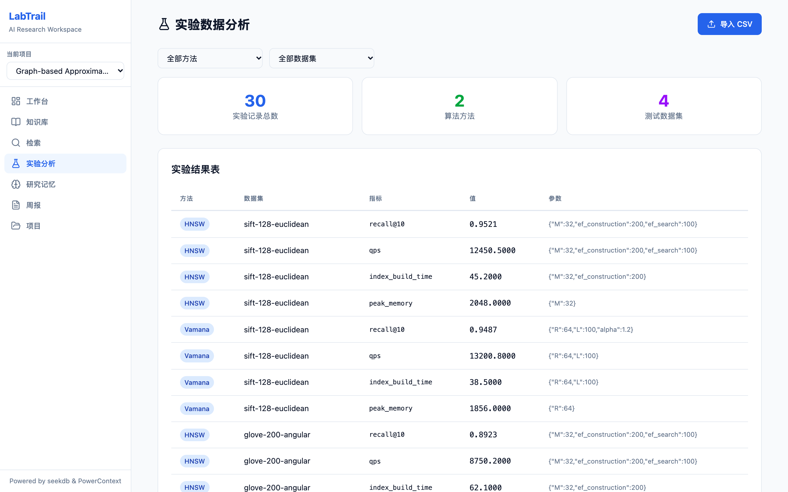
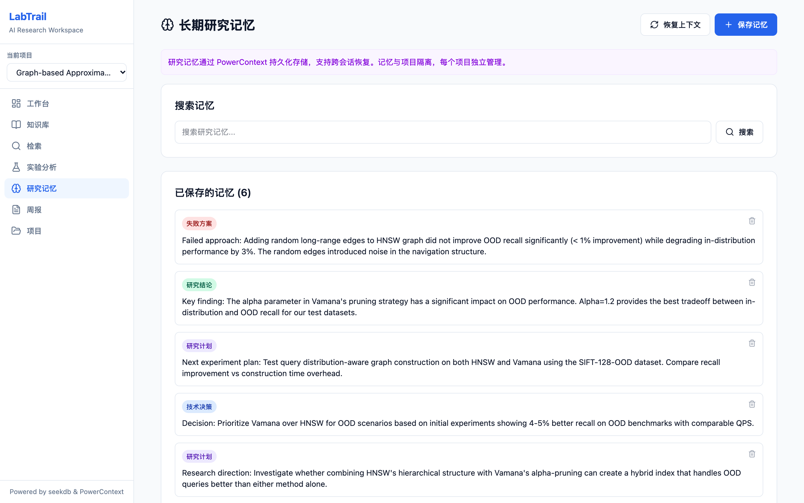
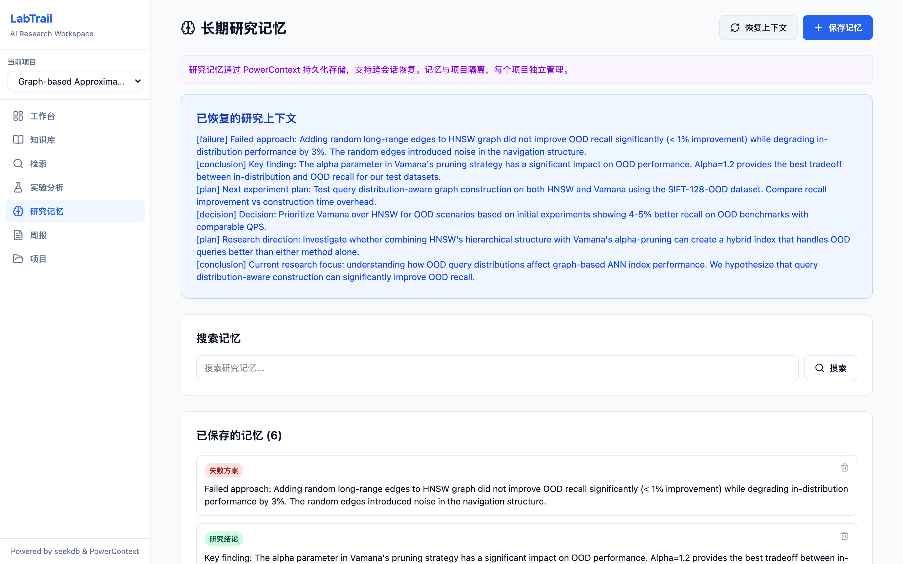
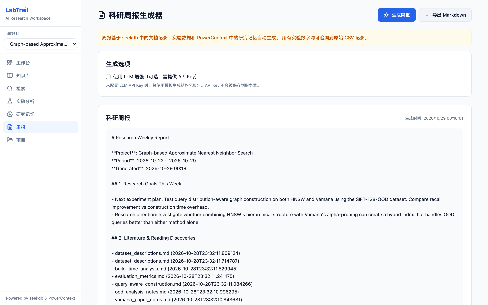

混合证据检索
IVF 向量索引与 FULLTEXT 全文索引并行召回，使用 seekdb 原生 hybrid_search 做 RRF 融合；结果可回溯到文件名、来源与页码。
LabTrail 将论文知识库、实验数据分析与长期科研记忆整合到一个工作台。 文档检索由 seekdb 的向量 + 全文混合索引驱动，科研记忆真实写入 PowerContext Server。
/api/*。
下方演示中的检索结果、研究记忆与实验数据，全部导出自本地真实运行的 LabTrail 实例（快照时间见演示区），不是手工编写的假数据。
需要调用完整 API、上传文件或现场检索，请按运行说明在本地或 Docker 中启动。

每一项能力都对应真实代码路径与可复现的验证结果，而不是界面占位。
IVF 向量索引与 FULLTEXT 全文索引并行召回，使用 seekdb 原生 hybrid_search 做 RRF 融合；结果可回溯到文件名、来源与页码。
支持 PDF、Markdown、TXT 与 CSV 上传，自动切块、向量化并写入 seekdb；文档元数据按项目隔离，避免跨项目污染。
seekdb 实测结论、决策、失败经验与计划写入独立 PowerContext Server。项目映射为 scope，kind 对应记忆类型，支持检索、上下文恢复与 forgotten 生命周期。
PowerContext 实测导入实验 CSV，自动汇总 recall@10、QPS、建图时间与峰值内存，生成 Recall-QPS 散点对比与方法级统计。
真实数据基于真实实验统计、最近活动与长期记忆生成结构化 Markdown 周报；默认模板生成，可选接入兼容 OpenAI 的 LLM。
模板 + 可选 LLM项目内统一查看文档数、实验指标、记忆数量与最近活动；支持多项目隔离与切换，所有统计来自真实数据。
实时统计文档与实验走 seekdb，科研记忆走 PowerContext；后端通过 SDK / HTTP API 真实读写，不做“概念引用”。
hybrid_search，RRF 参数 rank_constant=60/v1/memory/remember、/v1/memory/search、/v1/memory/entries/listLabTrail · <project_id>）forgotten以下数据由 scripts/export_web_demo.py 从本地运行实例导出。可切换查询与检索模式，查看记忆、实验图表与真实周报。
| 方法 | 数据集 | recall@10 | QPS | 建图时间 (s) | 峰值内存 (MB) | 参数 |
|---|
demo-data/experiments.csv。图表与表格均由快照数据在浏览器本地绘制。正在加载真实生成的周报…
POST /api/reports/weekly → generate_weekly_report()。周报内容来自当前项目的实验统计、最近活动与长期记忆。以下截图来自本地完整环境（seekdb + PowerContext + FastAPI + React），点击可查看大图。






运行 python scripts/verify.py 即可复现；检查直接命中 seekdb 与 PowerContext，不使用 mock。
推荐 Docker 一键启动；也可以按本地开发步骤分进程运行。详细排障见部署文档。
一条命令启动 PowerContext、后端与前端；首次构建会把嵌入模型打进镜像，之后可离线运行。
git clone https://github.com/Mingle-2012/labtrail.git
cd labtrail
docker compose up --build启动后访问：前端 http://localhost:5173 · API 文档 http://localhost:8000/docs。首次构建约 10–20 分钟，需联网下载依赖与模型。
需要 Python 3.12、Node.js 20+；PowerContext 以 --role all 启动。
python3.12 -m venv venv && source venv/bin/activate
pip install -r backend/requirements.txt
cp .env.example .env
powercontext server run --host 127.0.0.1 --port 8890 --role all &
python scripts/load_demo_data.py
cd backend && PYTHONPATH=. uvicorn app.main:app --port 8000
cd frontend && npm ci && npm run dev -- --port 5173首次运行会下载 all-MiniLM-L6-v2（约 90 MB）。完整步骤、环境变量与常见问题见 部署文档。
公网可直接访问、无需登录；提供真实数据快照与交互演示；不运行 Python 后端，因此没有 /api/*。适合快速了解产品与查看证据。
包含完整 REST API、文件上传、现场检索、记忆写入与周报生成；可运行 scripts/verify.py 复现全部检查，并在 /docs 查看 OpenAPI。